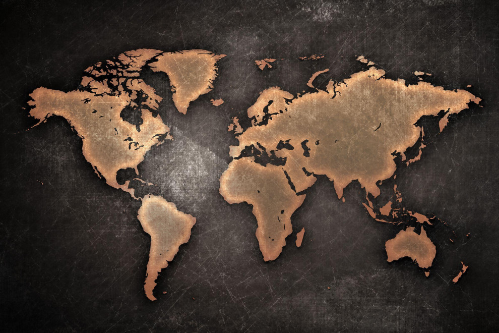

Concepto
INEGI (s.f) señala que: “La geografía es la ciencia que estudia los hechos y fenómenos físicos, biológicos y humanos de la superficie terrestre, atendiendo a las causas que los originan y a su relación con otros hechos o fenómenos”. Entendiendo como hecho geográfico a aquel que ocurre en la superficie terrestre y es caracterizado por ser permanente y estable y cuya formación es un proceso extenso. Por otro lado, un fenómeno geográfico se refiere a un cambio radical que puede observarse en la naturaleza (Diferencias, s.f).
Importancia
Texto
Imagen
La geografía tiene gran aplicación en los distintos campos de desarrollo del mundo. Su uso se extiende desde la adquisición de conocimientos para comprender las dinámicas presentes en el mundo actual, hasta la identificación y resolución de problemas particulares entre el ser humano y el entorno en el que habita. Además, es un punto importante de intersección entre las Ciencias sociales y las denominadas Ciencias exactas. Es decir que su área del saber incorpora herramientas y conocimientos que ninguna otra ciencia social considera (Editorial Etecé, 2021).
Continentes
Los continentes son grandes masas de tierra emergidas que constituyen la superficie terrestre, se encuentran divididos por los océanos y se distinguen por un conjunto de características geográficas, culturales sociales, económicas e históricas (Marques, 2023). La geografía desempeña un papel crucial en el análisis y comprensión de la diversidad de los continentes, así como en la exploración de las interacciones entre estos espacios continentales y sus habitantes.
Continente Americano

Continente Europeo

Continente Africano

Continente Asiático

Continente Oceánico